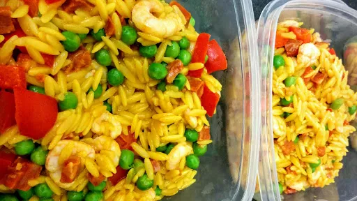

Prawn & chorizo pasta
You can buy frozen prawns if you like, they are significantly cheaper and word just as well as fresh prawns in dishes like this. Gluten-free: use rice instead of pasta and a gluten-free stock cube.
Servings: 3
Total: 20 mins
 Gluten Free
Gluten Free
Ingredients
- 1½ mugs orzo pasta
- 1 chicken stock cube
- 1 tsp turmeric
- 1 tbsp olive oil
- 1 red pepper, chopped
- 200 g chorizo sausage, diced
- 300 g cooked prawns
- 6 spring onions, chopped
- 1 mug frozen peas, defrosted
- 2 tbsp chopped basil
- Juice of lemon
Instructions
- Put the pasta1½ mugsin a large of boiling water. Add thestock cube1andturmeric1 tspand mix well. Simmer for 4-5 minutes, or until thepasta1½ mugsis just cooked. Drain thepasta1½ mugsand return to the pan.
- Heat the oil1 tbspin a wok, add thepeppers1and fry until they begin to soften. Add thechorizo200 gand fry until it begins to brown.
- Add the prawns300 g,spring onions6,peas1 mug,basil2 tbspandpasta1½ mugsto the pan and heat through.
- Squeeze over the lemon juice and season well with salt and pepper.
Nosh: Quick & Easy Short Link Long Link